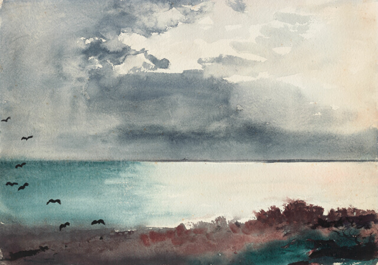

Breaking Storm, Coast of Maine
Watercolour · 1894 · 38.4 × 54.6 cm · $1,850
One work at a time on a single dark ground, medium noted in the caption rather than given its own room. Puts the image first and unifies the two practices. Tradeoff: it hides the shape of the collection, and browsing is slower.